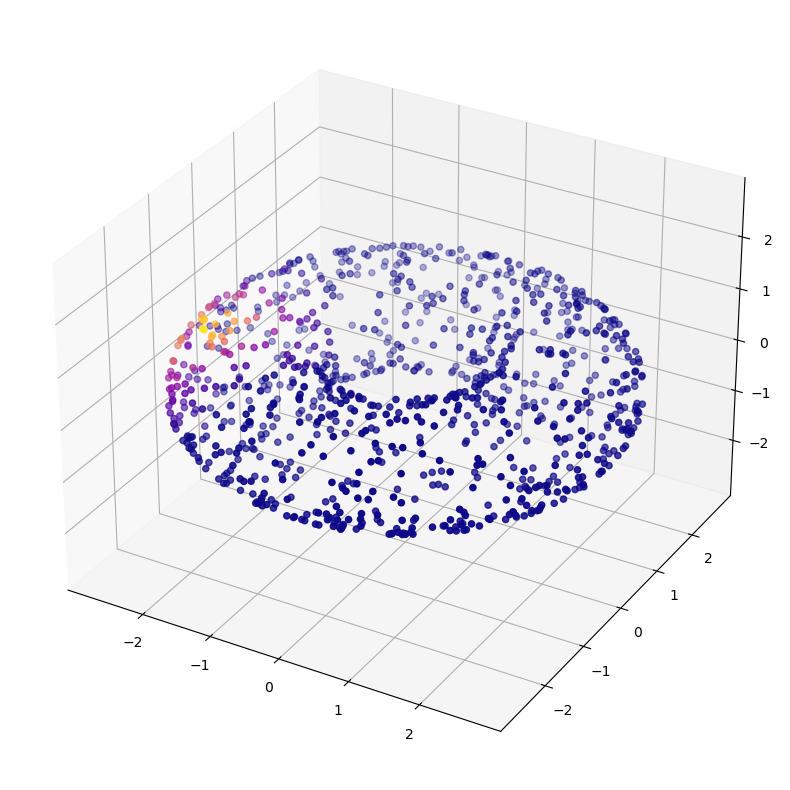

This notebook will establish our core utilities: functions for building the diffusion matrix, with various types of kernels.
Gaussian Kernel
This currently supports either a fixed bandwidth, which applies to all points, or an adaptive bandwidth, that creates a tailor-made bandwidth for each point.
The Median Heuristic for Kernel Bandwidth
Setting the kernel bandwidth is one of the most important operations with any kernel method. It’s important to have a good heuristic to avoid needing to estimate this by trial and error. This function implements the median heuristic described in https://arxiv.org/pdf/1707.07269.pdf.
The median heuristic sets the bandwidth to \(\sqrt{H_n/2}\), where \(H_n\) is the median of the squared distances between the upper triangle of the distance matrix.
# Get the distance to the kth closest neighbordistance_to_k_neighbor = np.partition(D,2)[:,2]# [:,2] # argpartition is more efficient than argsort ([python - How to get indices of top-K values from a numpy array - Stack Overflow](https://stackoverflow.com/questions/65038206/how-to-get-indices-of-top-k-values-from-a-numpy-array))distance_to_k_neighbor
plot_3d(X,list(range(len(X))),"Donut with sprinkles",colorbar =True)
Hurrah! Our donut is intact, and our plotting function is working as expected.
Now let’s visualize some diffusions, under various kernels.
The Adaptive Kernel
Here we have the adaptive kernel born Diffusion matrix, and we visualize the diffusion centered on the point (0,-3,0), which (from the view of the plot below), should be on the outer rim of the torus, facing us directly.
P = diffusion_matrix(X,kernel_type="adaptive",k=20)
dist = P[0]plot_3d(X,dist)

The Adaptive Anisotropic Kernel
Now we’ll add one more round of density normalization with the “adaptive anisotropic” kernel: \[ W_{a} = D^{-1} W D^{-1} \] Where D is the matrix whose diagonals are the rowsums of W.
P = diffusion_matrix(X,kernel_type="adaptive",k=20,anisotropic_density_normalization=1)
dist = P[0]plot_3d(X,dist)
It looks much the same, as expected. Ideally, this kernel will combat density related differences in the curvature, by equalizing the density.
from diffusion_curvature.datasets import sphere
X, ks = sphere(2000)
A = gaussian_kernel(X,kernel_type ="adaptive", k =10, anisotropic_density_normalization =1, threshold_for_small_values=1e-5)